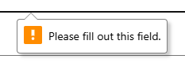
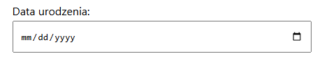

Mocne strony
Stworzenie formularza w HTML wydaje się bardzo przystępne dzięki stosunkowo prostej budowie i czytelnemu kodowi. Dostępne domyślnie różne typy pól upraszczają budowanie narzędzia do zbierania danych od użytkownika, dostarczające "out-of-the-box" kontrolki dopasowane do danych i oferujące wiele możliwości walidacji danych, zapobiegające wysłaniu na serwer danych które mogą z założenia nie być poprawne (z punktu widzenia folmularza). Duży plus również za szerokie wsparcie wśród przeglądarek, chociaż mozna wyczytać, że w przypadku nowszych kontrolek z HTML5 pojawiają się problemy z kompatybilnością, dla starszych przeglądarek lub różnicowania działania i wyglądu kontrolek w zależnośći od przeglądarki.
Słabe strony
Choć nie dotyczy to samych formularzy, zadanie to obnażyło jak prosto czasem "zakręcić się" w stylowaniu elementów przy wsparciu CSS. Nie wszystkie zależności pomiędzy zagnieżdżonymi elementami są oczywiste i skrupulatne porządkownaie zawartości CSS naprawde sie przydaje - komentarze w kodzie mile widziane.
Co do samych formularzy natomiast, to na front wysuwa się odczucie dość małej elastyczności, która przełoży sie na trudności z budowaniem bardziej skomplikowanych i internatywnych stron, w których odpowiedzi na kolejne pytania mogą powodować przekonfigurowanie dalszej części formularza.
Dało sie zauważyć również, że chyba nie wszystkie wbudowane elementy dają się stylować (np. komunikat o niespełnionych warunkach walidacji),
jak również nie wszystkie typy kontrolek są w pełni konfigurowalne (np. niemożliwym wydaje się zmiana formatowania daty dla kalendarza, które wymuszone jest przez przeglądarkę/system).
Czy warto?
Raczej tak 😉 Natomiast wydaje się, że formularze HTML najlepiej poradzą sobie w prostych zastosowaniach (choćby takich jak skromny dialog logowania, jakaś prosta "statyczna" ankieta czy podanie danych kontaktowych).
W momencie kiedy zestaw danych do wprowadzenie będzie zawierał bardziej rozbudowaną logikę biznesową, skomplikowane zasady walidacji czy też będziemy oczekiwać bardziej dynamicznego podejścia do interakcji z użytkownikiem - zapewne nie obejście się bez JavaScript'u...